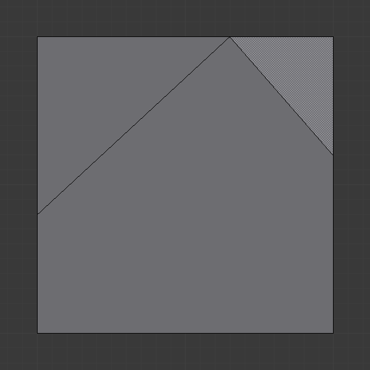

Knife Tool¶
Reference
| Mode: | Edit Mode |
|---|---|
| Panel: | |
| Hotkey: | K or Shift-K |
The Knife tool can be used to interactively subdivide (cut up) geometry by drawing lines or closed loops to create holes.
Usage¶
When you press K (or Shift-K), the Knife tool becomes active.
Drawing the Cut Line¶
When using Knife, the cursor changes to an icon of a scalpel and the header changes to display options for the tool. You can draw connected straight lines by clicking LMB, marked with small green squares. Red squares are already defined cuts. Surrounding red squares mean that there is a cut already in that very position, so no additional vertex will be created (besides the first one).

Mesh before knife cut. |

Knife cut active. |

After confirming knife cut. |
{kind=link}
Options¶
- Knife selection Shift-K
- Activates the knife with another set of options so only selected faces are cut and Cut through is on by default.
- New cut E
- Begins a new cut. This allows you to define multiple distinct cut lines. If multiple cuts have been defined, they are recognized as new snapping points.

Creating multiple cuts. |

Result of starting new cuts while in the tool. |
- Midpoint snap Ctrl
- Hold to snap the cursor to the midpoint of edges, meaning that all cuts will be performed at the exact center of each cut edge.
- Ignore snap Shift
- Hold to make the tool ignore snapping, unlike the default where mouse cursor snaps to near edges.
- Cut through: Z
- Allow the Cut tool to cut through to obscured faces, instead of only the visible ones.
- Angle constrain C
- Constrains the cut to 45 degree increments.
- Close loop: double-click LMB
- This is a quick way to close the loop you are currently cutting.
- Draw a continuous line: LMB drag.
- So you can draw a free-hand line over a surface, points will be created at edge intersections.

Constraining cut angle. |

Result of constraining cut angle. |
Confirming and Selection¶
Pressing Esc or RMB at any time cancels the tool, and pressing LMB or Return confirms the cut, with the following options:
Return will leave selected every edge except the new edges created from the cut.
Knife Project¶
Reference
| Mode: | Edit Mode |
|---|---|
| Panel: |
Knife projection is a non-interactive tool where you can use objects to cookie-cut into the mesh rather than hand drawing the line.
This works by using the outlines of other selected objects in Edit Mode to cut into the mesh along the view axis, resulting geometry inside the cutters outline will be selected.
Outlines can be wire or boundary edges.
To use Knife Project, first while in Object Mode, select the “cutting object” then add to that selection with Shift-RMB the “object to be cut”. Now, enter Edit Mode and press Knife Project (found in the Toolbar).
See also
3D View Alignment to adjust the projection axis.
Examples¶
{kind=link}
{kind=link}
{kind=link}
{kind=link}
{kind=link}
{kind=link}
Known Limitations¶
Duplicate Vertices¶
If you experience problems where duplicate vertices are being created by cuts, this is often caused by too large a near/far clipping range.
Try increasing the Clip Start to avoid this problem, see Depth Troubleshooting for details.
Unconnected Cuts¶
Cuts that begin or end in the middle of a face, will be ignored.
This is constrained by the kinds of geometry Blender can represent.